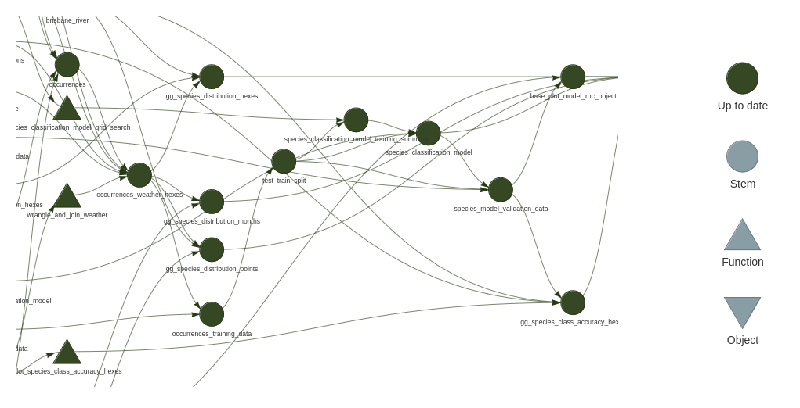

weather_data_path <- "data/brisbane_weather.csv"The {targets} plan
As discussed in the last section, refactoring our project into a collection of functions is actually most of the work in converting a pipeline to use {targets}. The run.R we built already looks a lot like a {targets} ‘plan’.
It’s time we actually defined what a {targets} plan is. This can be a little confusing because there are two things that users might refer to as the ‘plan’:
- A script file, by convention called
_targets.R, that sits in the root folder of the project.
- Sets up environment for the project’s targets. Loads packages, sources script files containing functions to be called. Sets global state: options, environment variables etc.
- Returns, as its last object, a list of target objects.
- The list of target objects itself. This data structure is what is analysed to determine the dependency structure of the pipeline graph.
So in classic R fashion, the definition of the computational graph is itself a data structure which can be manipulated to great metaprogramming effect. For example we can have targets that appear in the _targets.R as a single computational node, but are actually expanded out into several targets in the final returned object.1
In this workshop we’ll refer to the _targets.R file as the plan.
Let’s create a plan
Let’s jump into refactoring our run.R into a {targets} plan.
Refactoring steps
- rename
run.Rto_targets.R - add
library(targets)andlibrary(tarcheypes)to libraries
{tarchetypes}is discussed in the next section
- replace
set.seed(2048)withtar_option_set(seed = 2048) - Refactor paths bindings of data files like:
tar_file(weather_data_path, "data/brisbane_weather.csv")- Refactor each object binding like:
object_name <- function_call(arg1, arg2, arg3)to:
tar_target(
object_name,
function_call(
arg1,
arg2,
arg3
)
),- Wrap all the output bindings and their function calls in a
list()
- make sure there’s a comma separating each
- Replace
render("docs/report.Rmd")with
tar_render(report, "docs/report.Rmd")- Wrap each pipeline output in the report in
tar_read(), e.g.:
tar_read(gg_species_distribution_points)- Replace the code to source all files in the R folder with
tar_source()
Now we have a {targets} plan!
The completed refactor is available on the ‘refactor2’ branch of the R project.
{tarchetypes} and the Targetopia
{tarchtypes} is an addon package to {targets} also authored by Will Landau. It contains helpful additions that make expressing {targets} plans simpler and cleaner. It is part of the ‘Targetopia’ family of extensions for targets.
{targets} has been designed to allow users to create their own domain specific extensions, for example see {geotargets}.
In this refactor we use several {tarchetypes} functions:
tar_file()is a compact way to declare both input and output file targets.- These files will trigger targets that depend on them to be rebuilt if they change.
tar_render()is a way to declare an RMarkdown report target (Yes, there is a Quarto variant).- The R code in the report is analysed to discover dependencies on other targets.
‘Making a plan’
Assuming:
- Our R session working directory is the to the project root, where
_targets.Ris - We have the
{targets}package loaded in our R session
We can build all targets in the plan by calling tar_make()
If we do that now we should see a stream of messages appear in our R terminal like:
...
● completed target species_classification_model_training_summary [53.591 seconds]
▶ dispatched target species_classification_model
● completed target species_classification_model [3.06 seconds]
▶ dispatched target species_model_validation_data
● completed target species_model_validation_data [0.253 seconds]
▶ dispatched target base_plot_model_roc_object
Setting levels: control = FALSE, case = TRUE
Setting direction: controls < cases
● completed target base_plot_model_roc_object [0.005 seconds]
▶ dispatched target gg_species_class_accuracy_hexes
● completed target gg_species_class_accuracy_hexes [0.136 seconds]
▶ dispatched target report
● completed target report [4.148 seconds]
▶ ended pipeline [1.095 minutes]Immediately calling tar_make() again should show something different:
✔ skipped target species_classification_model_training_summary
✔ skipped target species_classification_model
✔ skipped target species_model_validation_data
✔ skipped target base_plot_model_roc_object
✔ skipped target gg_species_class_accuracy_hexes
✔ skipped target report
✔ skipped pipeline [0.173 seconds]By default the plan is built in a separate R session! So only state created by running _targets.R is used. This avoids a whole class of bugs that arise due to running code interactively against stale state in the global environment.
The Store
When we ran the plan for the second time all our targets were ‘skipped’ because the {targets} framework determined it already had the output for them, since nothing had changed since first time we ran the plan.
The built version of every target in the plan is stored in a place referred to as the store. By default the store lives inside the _targets folder which {targets} creates the first time we call tar_make(), and then refers to on every subsequent run.
For our project, that folder looks like this now:
_targets
├── meta
│ ├── meta
│ ├── process
│ └── progress
├── objects
│ ├── base_plot_model_roc_object
│ ├── brisbane_river
│ ├── gg_species_class_accuracy_hexes
│ ├── gg_species_distribution_hexes
│ ├── gg_species_distribution_months
│ ├── gg_species_distribution_points
│ ├── occurrences
│ ├── occurrences_training_data
│ ├── occurrences_weather_hexes
│ ├── species_classification_model
│ ├── species_classification_model_training_summary
│ ├── species_model_validation_data
│ ├── study_species
│ └── test_train_split
└── user_targets/objects contains the R objects returned from the functions that ran for each target. Each object is serialised to a file in Rds format, and labeled with the associated target’s name. The file format is configurable with the the format option of tar_target(). There are also format helpers available like tarchetypes::tar_parquet, which defines a target that will be serialised to parquet format.
There are some targets that are not present. File targets are stored only in the metadata.
We can get some interesting information from the metadata with tar_meta():
tar_meta() |>
arrange(-seconds) |>
select(name, format, seconds, bytes, warnings, error) |>
head() |>
knitr::kable()| name | format | seconds | bytes | warnings | error |
|---|---|---|---|---|---|
| species_classification_model_training_summary | rds | 54.934 | 395 | NA | NA |
| occurrences | rds | 9.832 | 326259 | NA | NA |
| report | file | 4.148 | 1950959 | NA | NA |
| species_classification_model | rds | 2.967 | 7969385 | NA | NA |
| occurrences_weather_hexes | rds | 0.488 | 511859 | NA | NA |
| study_species | rds | 0.347 | 555 | NA | NA |
Targets can be read from the store like:
species_classification_model_training_summary <-
tar_read(species_classification_model_training_summary) # returns value
tar_load(species_classification_model_training_summary) # adds to global environment- This is very useful to inspect intermediate targets to do further development with, or debug the plan.
Cleaning the store
- Running
tar_invalidate(occurrences)means the next time the plan is runoccurrenceswill be rebuilt, which MAY trigger downstream targets to be rebuilt, but not necessarily if targets identifies the value hasn’t changed. The stored value and metadata is retained. tar_delete()removes targets from the store. It supports ‘tidyselect’ style name matching.tar_delete(everything())wipes the whole store.
tar_prune()removes historical targets from the store that are no longer in the plan.- Useful if you accidentally get a typo’d version of target in your store and keep loading it by accident.
Plan visualisation
The graph of targets defined in the plan can be visualised with either - tar_visnetwork() - tar_glimpse() - doesn’t show information about which targets are up to date
e.g.

These get messy fast, but one useful aspect is targets that align vertically are not dependent on each other, so it can help you understand the scope for parallelisation to speed up running the plan.
Finer points
Packages
The global environment established by the _targets.R is used to evaluate all targets. This includes loaded packages. In the case of parallelism, as we will see later, the environment is replicated.
Aside from the traditional library() method, there is another way to declare packages, per target, using the packages argument. In this case the packages are loaded right before the target is built, or it’s built object is used in a downstream target. This may be situationally convenient, but because targets that do not share a dependency relationship can be run in any order, this means that packages can be loaded in any order, which could have unexpected consequences. I would suggest avoiding this.
Many examples you see will set packages globally in _targets.R using tar_option_set(packages = ) this conveys no advantage over the library() method, and has one significant drawback in that renv will not detect these packages automatically as project dependencies.
My recommendation is to stick with library()
There is one other option related to packages which is important. tar_option_set(imports = ) defines a set of packages whose functions and objects are to be watched for changes. If the package is updated it will cause dependent targets that use updated functions or objects to be rebuilt.
You probably don’t want to put every package in here - scanning through large amounts of code slows things down - packages that updated regularly could trigger too much churn in your pipeline - your internal packages or quite unstable packages are probably good candidates.
Constants
At the moment we have a objects declared outside the plan. E.g. study_date <- ymd("2024-05-08"). These are still watched for changes, but they are not targets. Their value is not available from the store. My advice is that it makes for a slightly better interactive development and debugging workflows to have them in the list of targets objects, so they become fully fledged targets, and available from the store.
tarchetypes::tar_plan is a replacement for list()allows targets to be written in the list like:
tar_plan(
study_date = ymd("2024-05-08"),
tar_target(
study_species,
search_taxa(c("Threskiornis molucca", "Threskiornis spinicollis"))
)
)File targets
It can be confusing that both input files and output files are declared the same way.
- If you have a file input, and you need targets that depend on the file to be rebuilt if the file changes, use
tar_file()in your plan. - If you have a target that writes a file, and you want that target to be rebuilt (and file rewritten), if the file is removed, use
tar_file()in your plan.
Just remember tar_file() for files!
Interactive development workflow
Here I’ll give you a quick demo of how you proceed with development.
The main elements are:
tar_load()the targets you want to work with interactively from the targets store withtar_load()- There is an RStuido Addin that ships with targets that can load the target under the cursor from the store. It is highly recommended that you make a keyboard shortcut for this. See creating a keyboard shortcuts for RStudio addins- Declare a new target, and create a new function to be home to your work. - Don’t forget about
{fnmate}! - Once your function seems like it will work, immediately run
tar_make()- I also highly advise making a keyboard shortcut for this. - It’s also convenient to runtar_make(target_name)to run the pipeline up to, but not past, the target you built, if there are other unrelated targets you don’t want to run right now. - Repeat. (e.g.
tar_load()the target you just defined and built to do further work)
Sometimes people ask about where to put experimental code they’re not sure should be in the plan yet. At the bottom of a file I’m working with I sometimes keep a ‘scratchpad’ of related code inside a block like:
function(){
# experimental code goes here
}The code is not run when running the plan and since the function has no name, it cannot be accidentally called. This tip came from Gábor Csárdi.
Review
What does each of these functions do?
tar_make()tar_load()tar_meta()tar_invalidate()tar_delete()tar_target()tar_file()tar_render()
What must be the last object returned in the _targets.R?
If you can answer those, you now have enough tools to use targets productively on your projects. The cake is baked. It’s all icing from here.
The two kinds of reproducibility
Hopefully you can see how the plan we have now defeats classes reproducibility issues typically experienced with classic R projects. Explicitly, we get a more reproducible workflow since:
- Our targets are built in a separate session, so cannot be affected the by the state of our interactive development environment.
- Since
{targets}intelligently caches our work, we can frequently run the pipeline with the same reproducibility guarantees as if we were running it from scratch, but take a fraction of the time.- Avoids the situation where the pipeline is rarely run end to end after small changes.
There is a second kind or reproducibility supported by this workflow though. I’ll argue with {targets} we can more easily reproduce an understanding of what all this code is doing in someone else’s head.
Imagine you are tasked with peer-reviewing a pipeline. If that pipeline is engineered with {targets} your workflow looks like:
- Run the full pipeline with
tar_make(). - Barring issues with the package dependencies, the code just works! It has frequently been tested end-to-end. - You start your review form the
_targets.Rwhich gives you a nice overview of what the important bits of information the pipeline depends on are. - You might even runtar_visnetwork()To get a feel for the most important chains of targets. - When you decide you need to inspect the code for a target to understand it better, you can immediately: -
tar_load()the input targets from the store, and execute a ‘jump to definition’ to go directly to the code where those targets are used. You can interactively play with the code until it makes sense. - You can context switch away and come back, maybe days later, and do exactly the same thing. All the pipeline’s targets are still sitting in the store ready for immediate interactive use.
For similar reasons as described here, {targets} works very well to support teams that have a high degree of context switching.
Footnotes
More concretely: We could have a ‘model fit’ target that decomposes into two separate targets for the model and performance statistics. We could use an argument to change the assessment criteria without rebuilding the model. Don’t worry if that didn’t make sense yet.↩︎